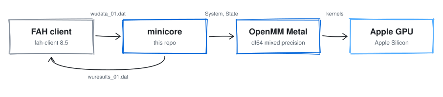
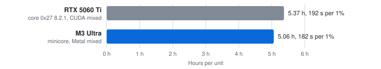
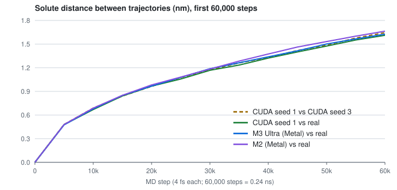
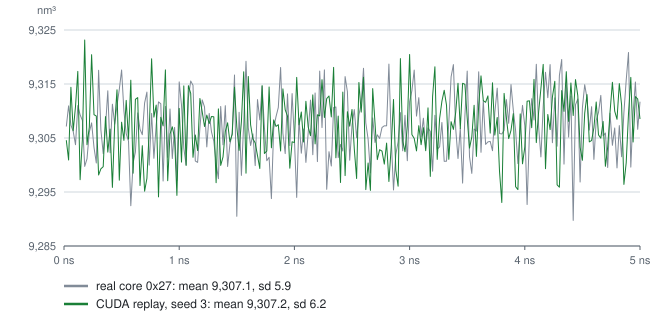
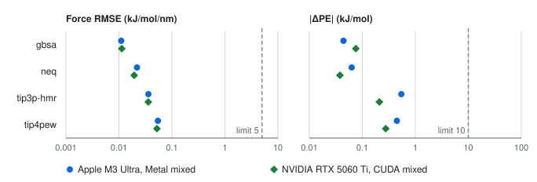
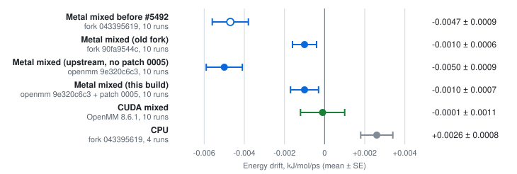
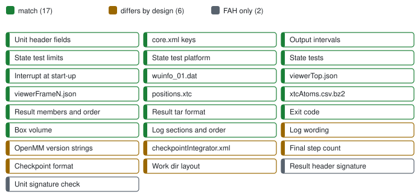

fah-core-metal
A Folding@home core for Apple Silicon GPUs, built on OpenMM's Metal platform.

minicore is a Folding@home core that runs FAH's OpenMM work units on the GPU of Apple Silicon Macs through Metal. On the M3 Ultra it folded a whole real FAH unit, project 18264 with 919,221 atoms, to a finished result in 5.06 h, and every state test passed. On the M2 it ran the first 5% of that unit and ran shortened copies of it to a finished result. On the M3 Ultra it matches FAH's core 0x27 on 20 of the 25 items in Figure 7; the other 5 are listed in the README under "Where it differs".
Speed
| Machine | Core | Span | Per 1% | Per unit |
|---|---|---|---|---|
| M3 Ultra, macOS 27 | minicore, Metal | whole unit | 182 s | 5.06 h |
| RTX 5060 Ti, Linux | core 0x27 8.2.1, CUDA, OpenMM 8.2.0 | whole unit | 192 s | 5.37 h |
| RTX 5060 Ti, Linux | core 0x27 8.2.1, CUDA, OpenMM 8.2.0 | first 11% | 187 s | |
| RTX 5060 Ti, Linux | minicore, CUDA, OpenMM 8.2.0 | first 11% | 184 s | |
| RTX 5060 Ti, Linux | minicore, CUDA, OpenMM 8.6.1 | first 11% | 180 s |
The M3 Ultra row is one run of the whole unit by this repo at b60c18b, at nice 0 on 2026-10-17 from 00:46 to 05:50Z, with a load average of 10.00 at the start and a CPU FAH core at nice 19 beside it. 182 s is the median of the 24 1% intervals that ended by 02:00Z, when no other GPU work was booked; all 100 took 180 to 184 s. 5.06 h is the run's wall clock. The RTX 5060 Ti rows come from one card. Core 0x27's rows are the whole unit FAH's client ran, timed from its first start, and that run's first 11%, the span the minicore runs cover. minicore's rows are the first 11% of the same unit at a 150 W power limit, where core 0x27 had 180 W; both drew a median 150 W. On that card minicore is about the same speed as core 0x27, slightly faster: 1.6% less time per 1% on OpenMM 8.2.0 and 3.7% less on 8.6.1. Across the two machines, the M3 Ultra takes 0.95 times core 0x27's time per 1% and 0.94 times its hours, one run of one unit on each.

Trajectories and box volume


The M3 Ultra's whole unit is not byte-identical to core 0x27's, and over 5 ns it can't be: the unit's seed 0 gives every run its own random noise, so no two runs of it share a trajectory. What can match does. Its result holds core 0x27's six files in the same order, with 101 viewer frames and 250 XTC frames at the same steps, and all 21 state tests passed, as core 0x27's did. Its mean box volume is 9,307.4 nm³ (sd 6.2) against the real run's 9,307.1 (sd 5.9), and its final energies sit within one sd of the CUDA replay's.
Accuracy


Parity with core 0x27

Each Mac also passed all 101 core-parity checks, run with the lab's build of minicore before this repo, and every state test it ran on the real unit: 12 on the M3 Ultra and 5 on the M2. This repo at b60c18b passed all 21 in the M3 Ultra's whole unit.
The source, the build, how to run it, the FAQ and the evidence for each number are in the repository: the README and docs/EVIDENCE.md.